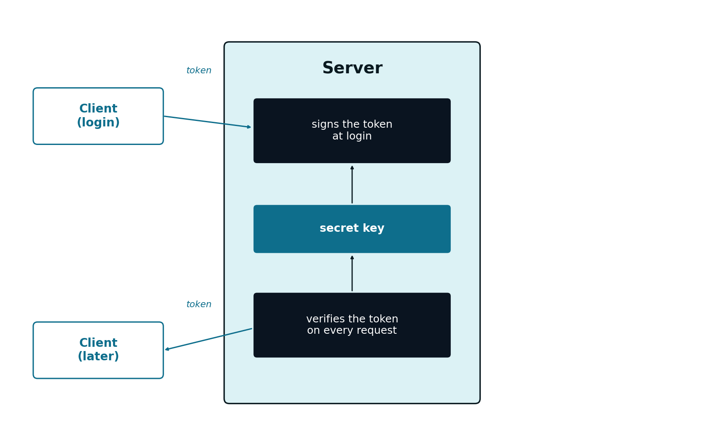
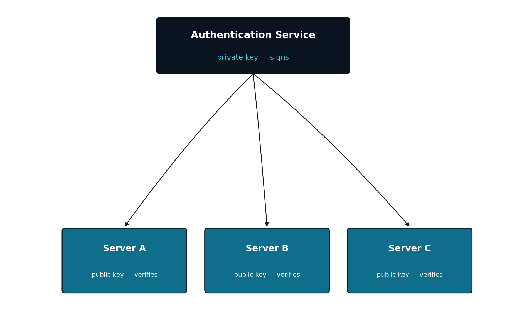

Appendix B — JWT Token Signing
B.1 Introduction
Chapter 8 showed how a JWT (see Section 8.3) is signed and verified, without ever going into detail on which algorithm is used, or what security guarantees that signature actually offers. This appendix looks specifically at that question: token signing.
B.2 HMAC: a Shared Secret Key
The algorithm used in Chapter 8, HS256, is the combination of HMAC (Hash-based Message Authentication Code) with the SHA-256 cryptographic hash function. It is a symmetric algorithm: the same secret key is used both to sign and to verify a token.
That key is never generated on the client, nor does it ever travel to it: it is created and stored exclusively on the server (typically once, during the application’s initial setup), and never leaves it. What the client receives, and later resends, is always the already-signed token — the result of using the key — never the key itself.

This works well in exactly the situation presented throughout this course: a single server (or several instances of that same server, all with access to the same secret key, see Section 8.5) is, at the same time, the one that issues tokens and the one that validates them. The key never leaves that trust boundary.
The drawback of HMAC appears when that boundary stops making sense: if an external system — one that should not have the authority to issue valid tokens — needed to validate them, it would have to receive the same secret key used to sign them. At that point, it stops being just a verifier: it also becomes capable of forging new, valid tokens, for any user.
B.3 RSA and ECDSA: a Key Pair
An asymmetric algorithm solves this problem by splitting the two capabilities into two distinct keys: a private key, known only to whoever issues tokens, and a corresponding public key, which can be freely distributed to whoever needs to validate them. What the private key signs can only be verified with the corresponding public key — but it is not possible to sign anything new using only the public key.
The two most common asymmetric algorithms in JWT are RS256 (RSA with SHA-256) and ES256 (Elliptic Curve Digital Signature Algorithm with SHA-256) — the latter more recent, with smaller keys and faster verification for an equivalent security level, increasingly preferred over RSA in new systems.

This design is the usual one in systems made up of several independent services (sometimes called microservices): a single Authentication Service, responsible for validating credentials and issuing tokens, and several other services, each validating those tokens completely on its own, without ever communicating with each other, or trusting each other beyond the shared public key.
B.4 Choosing Between HMAC and Asymmetric Signing
HMAC (HS256) |
Asymmetric (RS256/ES256) |
|
|---|---|---|
| Number of keys | One, shared | Two: private (issues) and public (verifies) |
| Who can issue valid tokens | Anyone with the key | Only whoever has the private key |
| Who can validate tokens | Anyone with the key | Anyone with the public key |
| Typical scenario | One server (or trusted cluster) issues and validates | Several independent services only validate |
| Performance | Faster, simpler | Slower, larger keys (except ECDSA) |
For the “World Capitals” application used throughout this course — a single server, responsible both for issuing and for validating its own tokens — HMAC is a perfectly adequate choice, which is why Chapter 8 uses it as its example. The choice would only start to favour an asymmetric algorithm if the application grew into several independent services, each of which should be able to validate, but not issue, access credentials.
B.5 The alg:none Attack
The header of a JWT itself declares which algorithm was used for the signature (see Section 8.3). The original JWT specification allows, among the possible values for that field, the value none — intended for cases where integrity is already guaranteed by some other mechanism, and no signature is even needed.
A poorly implemented verifier, one that blindly trusts the algorithm declared in the header instead of enforcing an expected algorithm, can be fooled by a token like this one:
followed by an arbitrary payload and an empty signature. If the verification code does not explicitly reject the none algorithm, an attacker can build, by hand, a token with any payload they want — for example, {"sub":"admin","role":"admin"} — without needing to know any key at all, and the server accepts it as legitimate.
It is exactly this attack that motivates the recommendation already made in Chapter 8: a well-written library, such as JJWT, requires the expected algorithm to be stated explicitly in the verification code, and rejects any token that declares a different algorithm — including none — regardless of what the token itself claims about itself.
B.6 Where to Store the Token on the Client
Everything covered so far protects the token against forgery — but not against theft (see Section 8.2): whoever holds it can use it freely, as if they were its rightful owner, until it expires. Where the client stores it between requests determines what kind of theft it is exposed to.
- Storing it in the browser’s
localStorage - Accessible to any JavaScript code running on the page — including, unfortunately, a malicious script injected through a Cross-Site Scripting (XSS) vulnerability. If such a vulnerability exists in the application, an attacker can read the token directly and resend it, impersonating the user. On the other hand, it is not automatically sent by the browser in requests to other sites, so it is not exposed to Cross-Site Request Forgery (CSRF)
HttpOnlycookie-
Marked with the
HttpOnlyattribute, a cookie becomes inaccessible to the page’s own JavaScript — not even a malicious script can read it, which neutralises theft via XSS. In exchange, the browser automatically resends cookies on any request to the domain, even when that request is triggered by a page from another site — reopening the door to CSRF, which then has to be mitigated separately (for example, with theSameSiteattribute)
localStorage |
HttpOnly cookie |
|
|---|---|---|
| Accessible to JavaScript | Yes | No |
| Vulnerable to XSS theft | Yes | No |
| Automatically resent by the browser | No | Yes |
| Vulnerable to CSRF | No | Yes, requires separate mitigation |
Neither option is risk-free — each trades one kind of vulnerability for another. The model followed in Chapter 8 (token resent manually in the Authorization header, see Section 8.7) assumes the token is accessible to the page’s own JavaScript, which points to localStorage, and is the most common approach in modern single-page applications. In that model, preventing XSS stops being just a general best practice: it becomes an essential condition for the security of the authentication mechanism itself — even though preventing XSS itself falls outside the scope of this appendix.
B.7 Minimum Best Practices
- Never blindly accept the token’s declared algorithm — the verification code must explicitly enforce the expected algorithm (see Section B.5)
- The secret (HMAC) or private (RSA/ECDSA) key must never live in the source code — it should be read from an environment variable or a dedicated secrets manager, never committed to a repository
- A short or predictable key defeats the algorithm’s security — the recommended minimum length depends on the algorithm, but a short, memorable string is never appropriate
- A short expiry (the
expclaim, see Section 8.4) limits the damage from a compromised token, even with no additional mechanism - HTTPS is always mandatory — even a correctly signed token is a valid credential if it is intercepted in transit; the signature protects against forgery, not against network eavesdropping
These practices are a starting point, not an exhaustive treatment of Web application security.